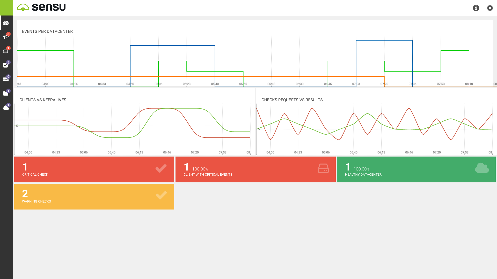
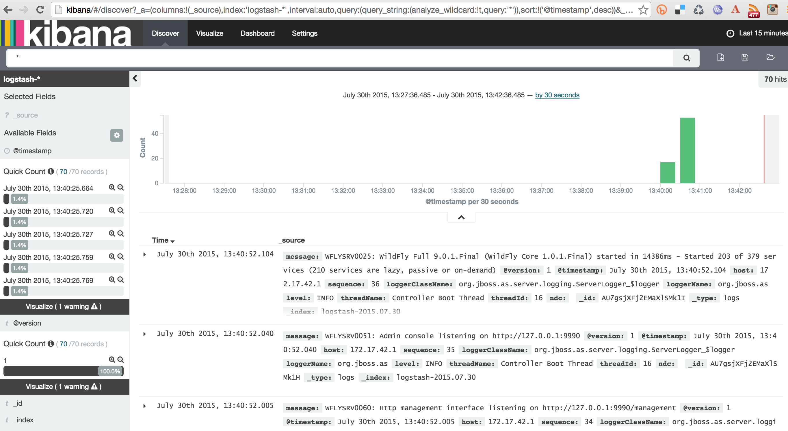

Infrastructure as Code
German Pabon
@german_pabon
Quien soy
- Cloud Solution Engineer
- Oracle Cloud Infrastructure
Qué es IaC
- Enfoque moderno para gestionar infraestructura
- Tratar infraestructura como software
- Automatización
Qué no es IaC
- cloud
- Palabra pegadiza(ex. Agile, DevOps)
- Tecnología
- Paradigma
Antes de IaC…
- Configuración manual de servers (ambientación)
- Despliegues manuales
- Infraestructura sin documentación
- IT SLAs
Propósito de IaC
- Consistencia
- Proceso repetitivo
- Automatización desatentida
- NoOps
Beneficios
- Despliegue Continuo
- Ambientes homogéneos (Dev/production)
- Feedback rápido
- Sistemas / infraestructura desechable
- “According to the 2016 State of DevOps Report, organizations that use DevOps practices, such as IAC, deploy 200 times more frequently, recover from failures 24 times faster, and have lead times that are 2,555 times lower.” Excerpt From: Yevgeniy Brikman. “Terraform: Up and Running.” iBooks.
Cómo hacer IaC ?
- Versionar todo (trazabilidad, rollbacks)
- Cambios incrementales
- Test driven
- Auto documentar
- Uso de templates (archivos de definiciones)
Tipos de herramientas
- Definición (Terraform, Ansible)
- Configuración/provisionamiento (Chef,Puppet,Ansible)
- Alerting/logging/monitoring (ELK)
Definicion
Ex: Terraform
resource "oci_core_instance" "AppAD1" {
availability_domain = "${lookup(data.oci_identity_availability_domains.ADs.availability_domains[0],"name")}"
compartment_id = "${var.compartment_ocid}"
display_name = "AppAD1"
image = "${var.InstanceImageOCID[var.region]}"
shape = "${var.AppShape}"
create_vnic_details {
subnet_id = "${oci_core_subnet.PrivSubnet1AD1.id}"
# assign_public_ip = true
}
metadata {
ssh_authorized_keys = "${var.ssh_public_key}"
user_data = "${base64encode(file(var.AppBootStrap))}"
}
}
https://github.com/abannang/OCI/blob/master/memcached-OCI/Memcache%20TF%20scenario-1/compute.tf
Definition
Ex: Ansible
- name: Launch an OCI instance (Compute) oci_instance: availability_domain: "{{ instance_ad }}" compartment_id: "{{ instance_compartment }}" name: "my_test_instance" image_id: "{{ instance_image }}" shape: "{{ instance_shape }}" vnic: assign_public_ip: True hostname_label: "{{ instance_hostname }}" subnet_id: "{{ instance_subnet_id }}" metadata: ssh_authorized_keys: "{{ lookup('file', my_test_public_key ) }}" register: result
Configuration
Ex: Ansible
--- - hosts: server sudo: yes sudo_user: root tasks: - name: install mysql-server apt: name=mysql-server state=present update_cache=yes - name: install ansible dependencies apt: name=python-mysqldb state=present - name: Ensure mysql is running service: name=mysql state=started
Configuration
Ex: Chef
mysql_service 'default' do port '3306' version '5.5' name 'localhost' initial_root_password 'p4ssw0rd' action [:create, :start] end mysql_config 'default' do source 'my.cnf.erb' notifies :restart, 'mysql_service[default]' action :create end
Configuration
Ex: Docker
USER nginx EXPOSE 4443 WORKDIR /opt/ ENTRYPOINT ["/usr/local/bin/docker-entrypoint.sh"] CMD ["nginx", "-c", "/nginx/nginx.conf", "-g", "daemon off;"]
Infrastructure services
Alerting

Monitoring
Sensu 
Logging
ELK 
Demo time
Resources
Infrastructure as Code book
?s